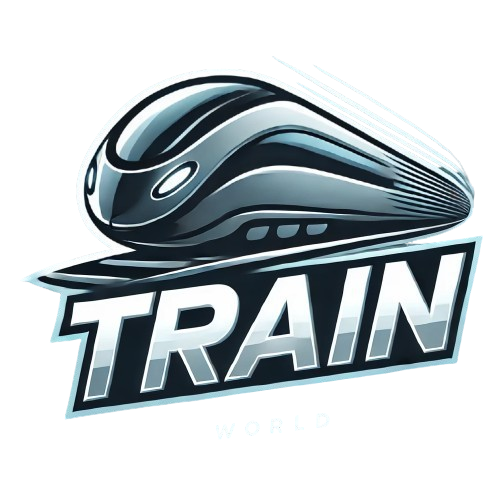
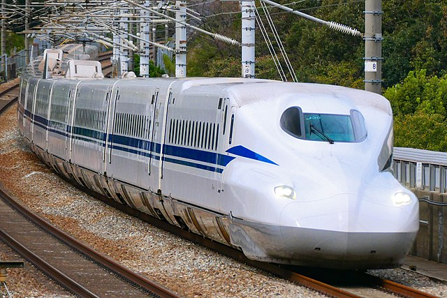

Влаков Свят
"Пътувай с мечтите по релсите!"
Най-новите влакове

Shinkansen N700S
Най-новият високоскоростен влак в Япония, е оборудван с напреднали системи за безопасност и предлага по-комфортно пътуване.
Разгледай повече
Siemens Velaro Novo
Високоскоростен влак от ново поколение, проектиран за енергийна ефективност и с увеличен пътнически капацитет.
Разгледай повече
Alstom Avelia Horizon
Високоскоростен Френски влак, който поставя нови стандарти за екологично пътуване и комфорт на пътниците.
Разгледай повечеЗа нас
Влаков Свят е любителски уебсайт, посветен на красотата и магията на железопътния транспорт.
Тук ще откриете интересни истории за влакове, любопитни факти за тях и галерия със снимки на
впечатляващи локомотиви от цял свят. Тук е мястото за всички, които обичат да откриват
нови хоризонти по релсите и да се наслаждават на приключенията,
които само влаковете могат да предложат.